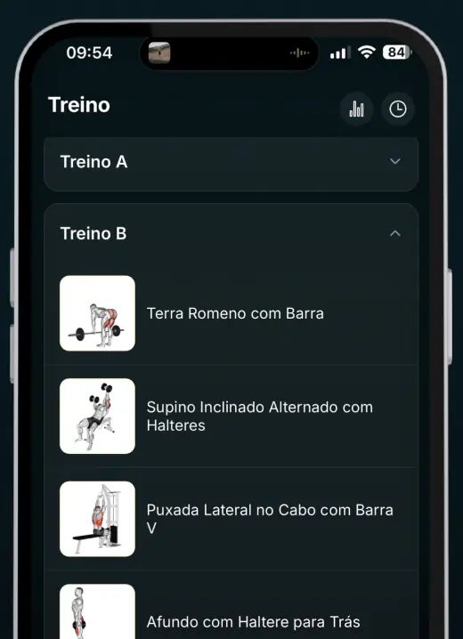
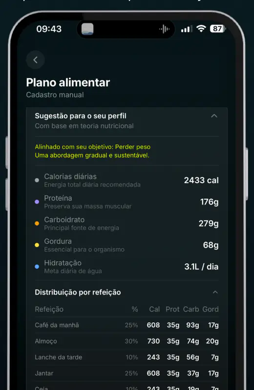
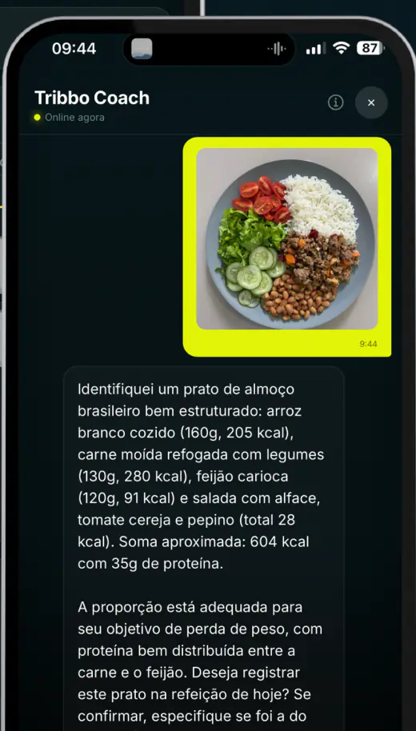
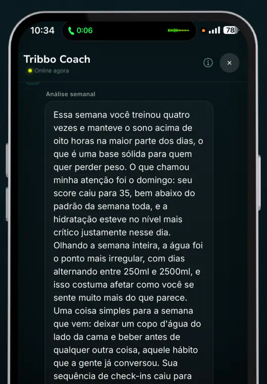
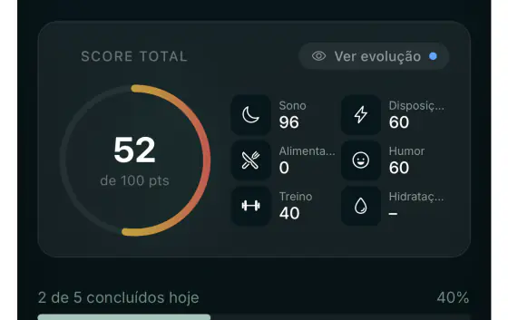
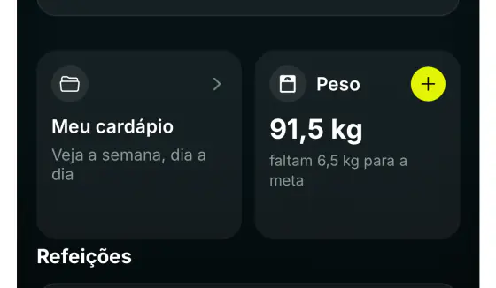

Treino e alimentação no mesmo plano
Pare de treinar no improviso e comer no chute.
Responda o quiz e receba um plano de treino e um plano alimentar feitos para o seu corpo, sua rotina e seu objetivo. Depois, o app acompanha você todos os dias.
Monte seu plano agoraBaixe grátis e assine para ter o plano completo. O preço aparece só no final do quiz.
Para quem é
Se você se vê aqui, o plano é para você.
Como funciona
Três passos e você sai do lugar.
Responda o quiz
Seu objetivo, seu corpo, sua rotina, onde você treina e o que gosta de comer.
Receba seu plano
Plano de treino e plano alimentar montados com as suas respostas.
Acompanhe no app
Treino do dia, cardápio, registro das refeições e um coach para tirar dúvidas.
O que tem dentro
Tudo o que você precisa, no seu bolso.
Plano de treino montado para você, com vídeo de cada exercício
Séries, repetições e descanso para o seu nível, na academia, em casa ou só com o peso do corpo. Na dúvida do movimento, é só ver o vídeo.



Evolução de carga: o app diz quando subir o peso
Ele guarda o que você levantou em cada série e mostra quando é hora de aumentar e quando é melhor manter. Sem chute e sem ficar parado no mesmo peso.

Plano alimentar com cardápio da semana
Calorias, proteína, carboidrato, gordura e água do seu dia, divididos por refeição. E um cardápio para cada dia da semana com comida que você encontra no mercado.

Foto da refeição: tirou, registrou
Fotografe o prato e o app estima as calorias e os nutrientes. Registrar o que você come deixa de ser trabalho.

Áudio: fale o que comeu e a IA registra
Sem tempo para digitar? Aperte o microfone, conte o que comeu e pronto: a refeição entra no seu dia.
"Almocei arroz, feijão, um filé de frango e salada."
Pronto, registrei no seu almoço.
Exemplo ilustrativoCoach com IA, Score do dia e acompanhamento do peso
Tire dúvidas com o coach a qualquer hora, veja no Score como foi o seu dia em treino, sono, alimentação e água, e acompanhe o seu peso semana a semana.



Quem já usa
Mais de 5 mil pessoas já começaram com o Tribbo Fit.
"Agora consigo acompanhar minha evolução na academia e não fico mais com dúvida do movimento dos exercícios."
"Muito bom para treinar e fazer dieta."
"Aplicativo excelente, consigo manter minha rotina com mais facilidade."
"Excelente app! O melhor que usei até agora!"
Notas conferidas nas páginas da App Store e do Google Play em 7 de novembro de 2026.
Fale com o fundador
Tem dúvida? Fala direto comigo.
Eu sou o Roberto e criei o Tribbo Fit. Se ficou alguma dúvida sobre o plano, sobre o app ou se ele serve para você, me chama no WhatsApp. Quem responde sou eu.
número do WhatsApp a preencher
Perguntas frequentes
Antes de começar
Quanto custa?
Você baixa o app grátis e assina para ter o plano completo. O preço aparece no final do quiz, depois que você vê o que foi montado para você. Responder o quiz não custa nada.
Posso cancelar quando quiser?
Pode. A assinatura é feita pela App Store ou pelo Google Play, e você cancela quando quiser nas assinaturas da sua loja, sem precisar falar com ninguém.
Para quem é o Tribbo Fit?
Para quem quer perder peso, ganhar massa ou começar a se cuidar com um plano de verdade. Serve para quem nunca treinou e para quem já treina. É para maiores de 18 anos.
Preciso de academia?
Não. O plano é montado para onde você treina: academia, em casa com poucos equipamentos ou só com o peso do corpo.
É um app médico?
Não. O Tribbo Fit é um app de bem-estar. Ele não faz diagnóstico e não substitui médico, nutricionista ou educador físico. Se você tem alguma condição de saúde, está grávida ou amamentando, converse com um profissional antes de mudar o treino ou a alimentação.
Mais uma semana sem plano ou o primeiro dia do seu?
Responda o quiz e descubra por onde começar, do seu jeito.
Monte seu plano agoraBaixe grátis e assine para ter o plano completo.